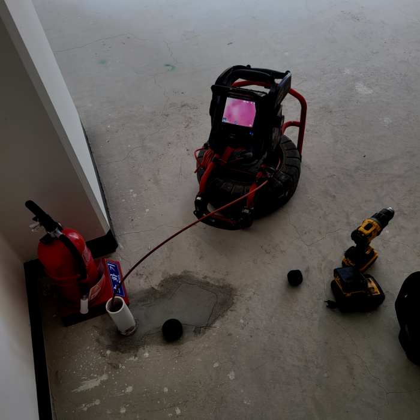
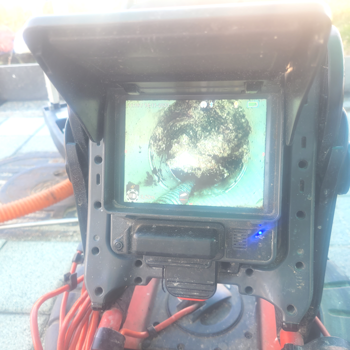
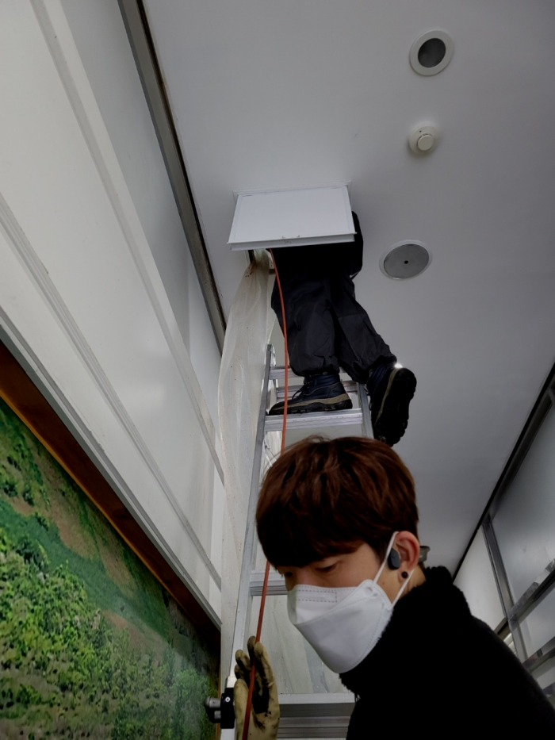
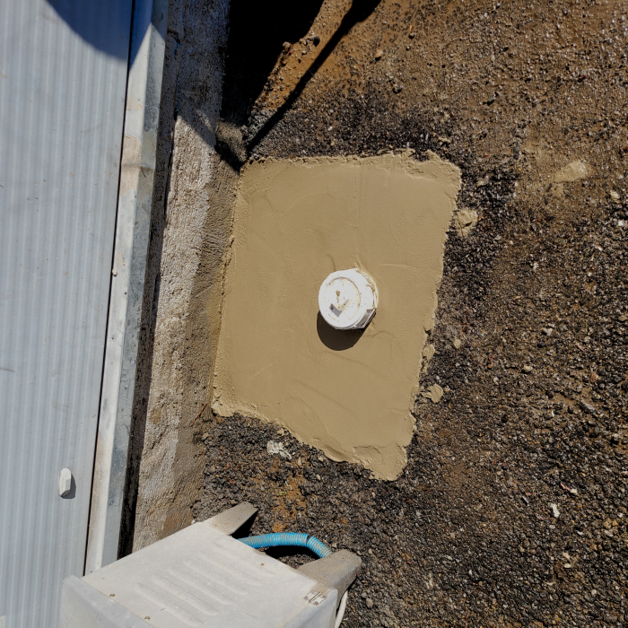
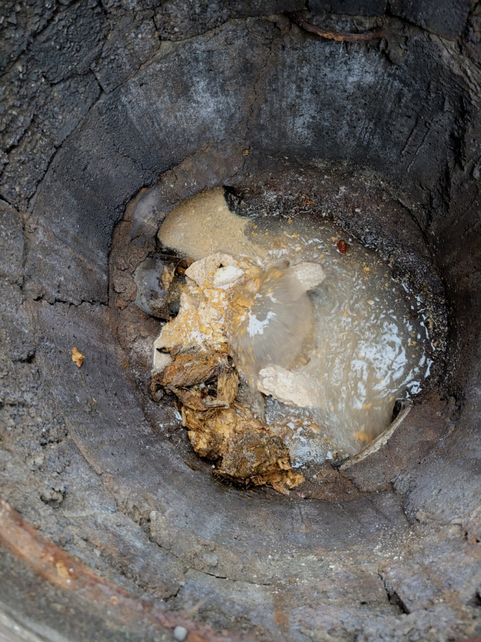
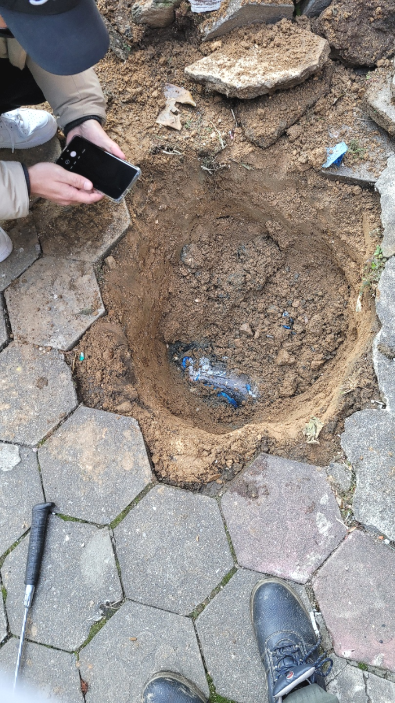

🏠 송탄 이충동 배수관막힘 장당동 배수구역류 뚫음 출장 설비업체
용인 싱크대막힘 전문 시공 후기

📋 작업 개요
- 위치: 용인
- 서비스 유형: 싱크대막힘, 변기막힘, 하수구막힘, 배관막힘, 역류해결, 뚫는업체, 배관청소, 고압세척
- 작업 일시: 2024. 2. 15. 23:30
- 업체명: 하수구수사대 (010-5615-2118)
🔍 문제 상황
어서오세요
설비전문업체 "하수구수사대"를 찾아주셔서 고맙습니다.
퇴수구배관은 평소에 관리를 잘 하지 못하고 있다가 결국에는 막혀서 역류를 하게 됩니다. 그럴 때 바로 저희같은 퇴수구전문업체를 불러서 해결하셔야 합니다.아니면 나중에 더 심각하게 되면서 다른 사람에게 피해를 주기도 합니다.

🔎 원인 분석
💡 전문가 진단: 송탄 이충동 배수관막힘 장당동 배수구역류 뚫음 출장 설비업체
송탄 이충동 배수관막힘 장당동 배수구역류 뚫음 출장 설비업체
여기에도 확실한 배관청소 작업이 필요해 보였습니다. 이에 추가적으로 저희는 잔여 물질들을 제거를 하기 위해서 플렉스 샤프트 작업을 진행하기로 결정을 하였습니다. 플렉스 샤프트 장비는 회전력을 발생시키는 갈퀴 노즐이 있어서 석회처럼 단단한 이물질들을 갈아내는 역할을 하는 장비입니다.
전문가여도 내시경 기계가 없다면 배관이 무엇으로 막혔는지 정확하게 원인 규명을 해드릴 수 없어요. 원인을 알아야 뚫는 방법도 정해지니 장비도 꼭꼭 확인해 주세요.하수 내시경은 필수 장비랍니다!
고민하실 적에 갖추고 있는 장비에 대해서도 체크해야 합니다. 매장이라거나 큰 건축물에서 배수구뚫음 받아보신 고객의 경우에는 이런 사항들을 궁금해하십니다.

🔧 작업 과정
내시경을 내려보니 배수막힘이 일어난 이유는 기름들이 가득 쌓이면서 물이 내려가기 어려운 통로 상태였는데요. 이러한 기름 슬러지들을 제거하기 위해서 배관에 플렉스 샤프트라는 장비를 사용해서 스케일링 작업을 진행하게 되었습니다.
플렉스 샤프트기는 케이블 앞쪽에 사슬 모양의 체인이 부착되어 있어 전동드릴 가동 시 회전하면서 360도로 배관을 돌며 이물을 제거하는 것이 가능한 배수관장비입니다. 배관 모양이 원형이기 때문에 이렇게 회전이 가능한 배수관장비를 이용하여 이물질을 타격하면 위치와 관계 없이 보다 효율적으로 이물 제거가 가능하다는 장점을 가지고 있습니다.
어떠한상황인지에따라 처리하는방법이 하수관넘치는데 찌꺼기의 모양새가 생각보다 물렁하고 심하지않게 막혔으면 락스를반복해서 넣으신다음 없애는것도 좋은방법이에요
작업을 하시고 재발해서 A/S 서비스를 받으시는 분들도 많은데 저희들도 A/S 서비스를 진행하지만 작업의 문제로 다시 불러주시는 분들은 거의 없습니다. 대부분 생활습관으로 인해 다시 막히는 경우는 있지만 저희들이 꼼꼼히 재발하지 않게 설명해 드리고 있으니까 걱정 마세요.
장비로 작업이 제대로 안된다는 느낌이 들 때는 빨리 중단하고 그 원인을 찾아봐야 합니다. 이는 실내에서의 작업에서도 마찬가지입니다.
호스 자체가 얇아서 잘 구부러지고 길이도 아주 긴 장비라서 어떤 형태의 배수배관이라도 점검이 가능하지요. 이미 많은 이물질을 제거했지만, 배수배관에 잔여물이 남지 않았나 체크하는 과정입니다. 그리고 석션기로 마지막 흡입 세척까지 진행하고서야 전체적인 마무리가 되었습니다.


✅ 작업 완료
저희는 가정집뿐만 아니라 상가,빌딩,아파트, 다세대 주택등 배수관막힘 현장이라면 장소를 가리지 않고 배수관막힘 문제를 해결해 드리고 있으니 언제든지 부담없이 연락주세요!
#하수구막힘 #하수구뚫음 #하수구역류 #씽크대막힘 #싱크대역류 #오수관막힘 #하수구청소 #욕실하수구막힘 #변기막힘 #하수구뚫는비용 #싱크대수리 #화장실막힘




⚠️ 주방 싱크대 배관 막힘 예방 수칙
- ✅ 기름기가 묻은 식기나 프라이팬은 설거지 전 키친타올로 반드시 기름때를 닦아내세요.
- ✅ 주기적으로 싱크대 개수대에 뜨거운 물을 가득 받아 한 번에 내려 배관 내부 기름을 씻어내세요.
- ✅ 배수구 거름망을 미세한 필터로 사용하시고 음식물 찌꺼기가 틈으로 새어 들지 않게 관리하세요.
- ✅ 베이킹소다와 식초를 뜨거운 물과 함께 일주일에 한 번씩 부어주면 배관 살균과 막힘 예방에 좋습니다.
💡 핵심 정리
- 확실한 장비 작업(내시경 점검 및 샤프트 스케일링)으로 원인을 뿌리 뽑습니다.
- 작업 후 1년 이내에 동일한 부위 재발 시 100% 무상 A/S 서비스를 보장합니다.
- 서울 · 경기 · 인천 전 지역에 24시간 언제든 긴급 출동할 수 있도록 항시 대기 중입니다.
❓ 자주 묻는 질문 (FAQ)
🚨 용인 싱크대막힘 문제로 고민이신가요?
정확한 원인 진단과 확실한 시공으로 재발 없는 해결을 약속드립니다.
24시간 긴급 출동 | 서울 · 경기 · 인천 전지역 | 1년 내 재발 시 무상 A/S